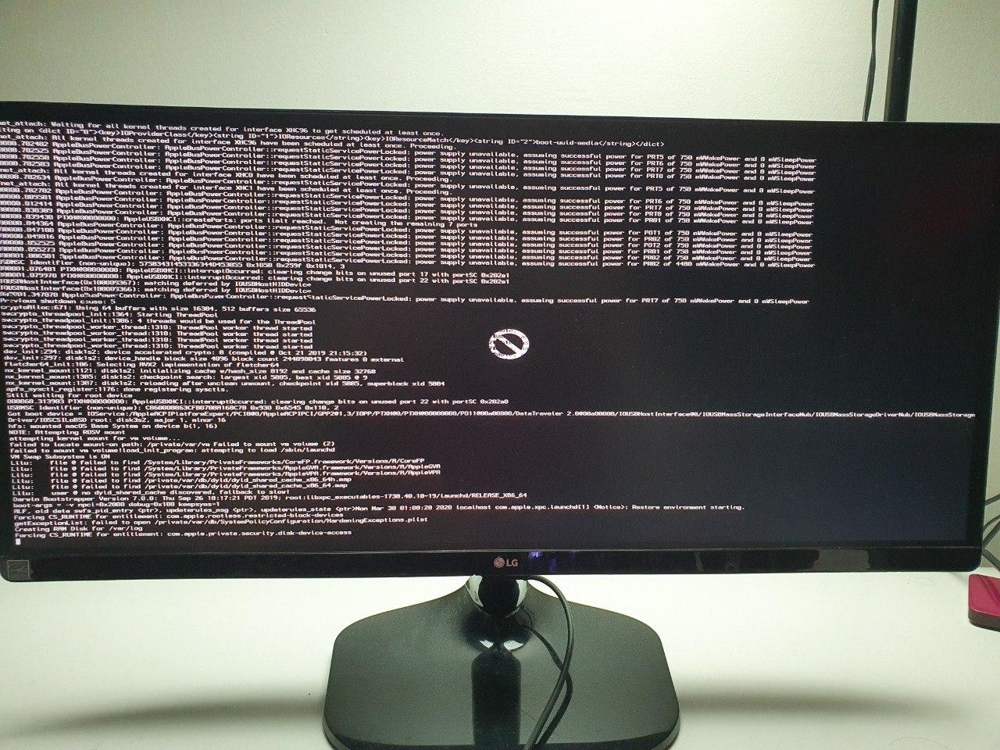
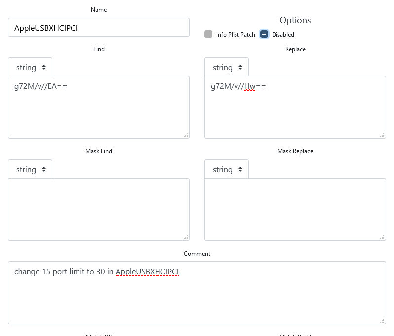

المشكله تاتي بعلامه منع او توقف ويكون الكلامه غير واضح لاكن معظم الوقت يكون اخر سطر وهو Still waiting for root device… السبب هو انه ال USB “فقد” اثناء عملية الاقلاع
امثلة : 
الحل يكون باستخدام كيكست USBinjectAll.kext
او تستخدم Cloud Clover Editor
ثم KextToPatch
ثم Kext Patch واضغط علامه الزائد
ثم املئ الفراغات كالاتي
name = AppleUSBXHCIPCI
comment = change 15 port limit to 30 in AppleUSBXHCIPCI
Find = g72M/v//EA==
Replace = g72M/v//Hw==
